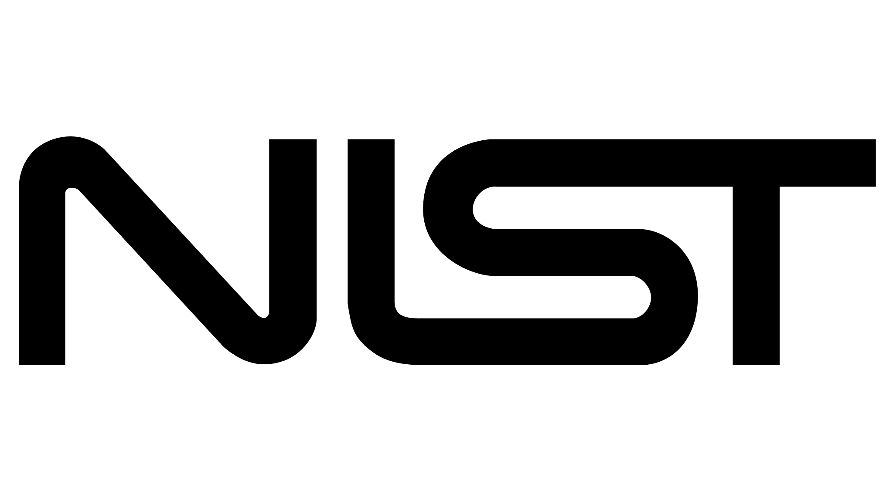
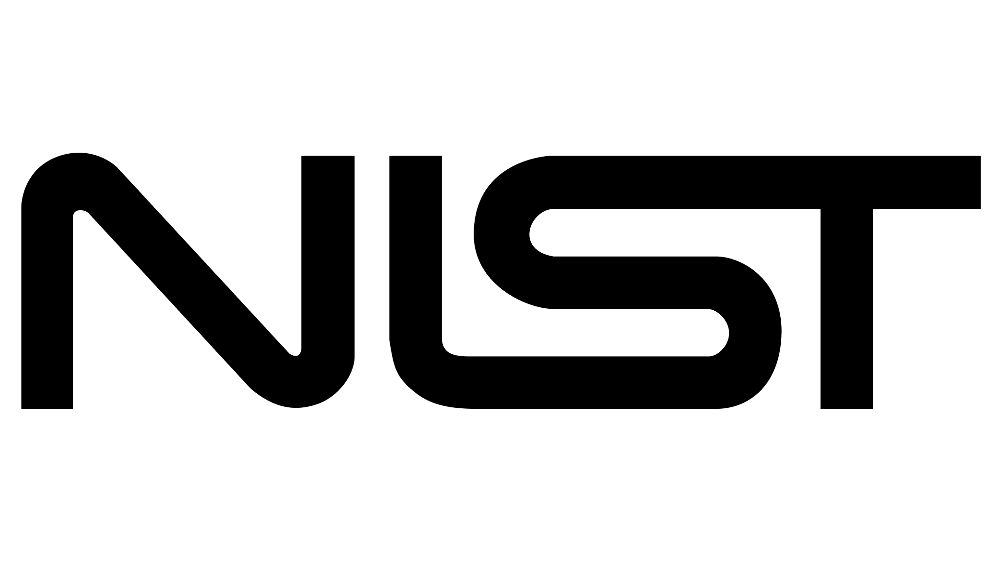
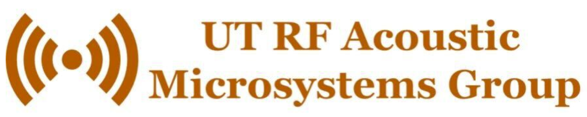
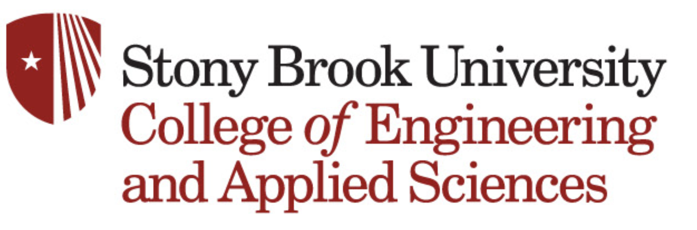
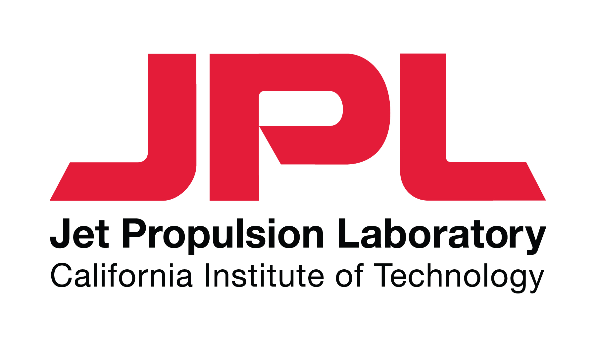

Quantum Optics (2022)
Modeled a two-level simulation of rubidium vapor with red and blue detuning.
Calculated saturation parameters such as susceptibility χ and Kerr coefficient n₂.
Skills: Python plotting and simulations.

I am a Mechanical Engineering student at Stony Brook University (B.E., minor in Nanotechnology) with research across quantum optics, MEMS fabrication, soft electronics, thermal-fluids, and high contrast imaging for space telescopes.
I like working at the intersection of physics, hardware, and computation – building systems that combine careful modeling, hands-on fabrication, and control or data analysis.
Modeled a two-level simulation of rubidium vapor with red and blue detuning.
Calculated saturation parameters such as susceptibility χ and Kerr coefficient n₂.
Skills: Python plotting and simulations.
Fabricated acoustic resonators designed for high-temperature operation in a cleanroom.
Measured SAW devices with probe station and VNA.
Skills: microfabrication, profilometer, probe station, vector network analyzer.
Integrated thermal and haptic feedback into virtual reality wearables.
Fabricated soft Peltier modules and tuned temperature response with current.
Skills: circuitry, Arduino, embedded control.
Deformable Mirror Characterization for future coronagraph instruments in space.
Designed thermal layout in vacuum and controlled heater output with PID + serial interface.
Skills: Python, control systems, optics.
Designed and built a turbulent flow loop with aluminum and acrylic test sections.
Performed pump and cavitation analysis, head losses, and heat-transfer design.
Skills: CAD, P&ID, fluid mechanics, heat transfer.
I’ve also worked on manufacturing, robotics, and CAD design projects.